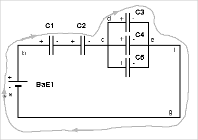
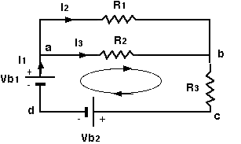

NOTE: When the sum for use in the loop rule is constructed, the
sign in front of each Vi term is determined by the "direction", which determines
the sign of the changes in potential. The convention for each circuit
element is
(1) Potential change across a resistor is -Vi , if the current
is in the direction of sum, because this represents going from high to
lower potential. It is +Vi otherwise.
(2) Potential change across a capacitor is -Vi, if the direction
of the sum is from positive plate to negative plate, because this
represents going from high to lower potential. It is +Vi otherwise.
(3) Potential change across a battery is +Vi, if the
direction of the sum is from negative plate to positive plate, because
this represents going from low to higher potential. It is -Vi otherwise.
(4) Potential across an inductor is +Vi, if the current is in the
direction of the sum. It is -Vi otherwise. This differs from the
treatment of resistors because the equation for voltage across an inductor is
conventionally written with a negative sign in it (see above).
In each of these cases the direction of the sum is the direction
that one is going around the closed loop to construct the loop rule sum.
See the examples below.
Capacitors example: In the figure below, take the loop abcdefga
and get
Vb1 - V1
- V2 - V3 = 0 and use V1 = q1/C1, V2 = q2/C2 and V3 = q3/C3

Resistors example: In the figure below, take the loop abcd and
apply Kirchhoff's loop rule to get
-V2 -V3 -
Vb2 + Vb1 = 0 and use V2 = I3*R2 , V3 = I1*R3
